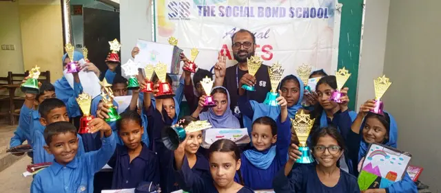
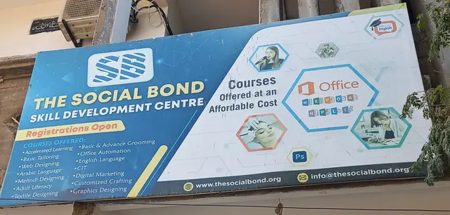
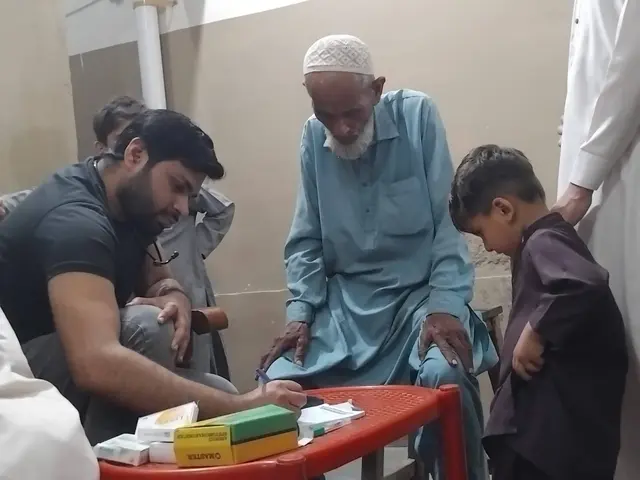

TOGETHER FOR CHANGEEmpowering people,
Empowering people,
one act at a time.
Building stronger communities through education, healthcare, skills and compassionate action.
Community first. Change that lasts.
CARE
✳
ACT
✳
ACT
01 / WHO WE ARE
Small acts. Shared hope.
A future with room for everyone.
We work alongside communities to widen access to opportunity and help people build a future with dignity, equality and hope.
Joining hands to help underserved communities shape a brighter future.
Empower communities
Supporting resilient neighborhoods through locally rooted initiatives.
Support education
Creating access to learning, mentorship and meaningful resources.
Drive lasting change
Working together on practical, long-term community solutions.
02 / OUR FOCUS
Where care becomes
collective action.
Our work focuses on essential foundations for a thriving community.
EducationHealthcareSkill developmentCommunity relief

01 — EDUCATION
The Social Bond Schools
Learning support, mentorship and safe spaces that help young people explore their potential.
Discover the program ↗
02 — SKILL DEVELOPMENT
Skills for tomorrow
Practical learning opportunities that help people grow confidence and useful skills.
Discover the program ↗
03 — HEALTHCARE
Sir Saed Memorial Clinic
Community-centered care, health awareness and support for families.
Discover the program ↗03 / IN THE COMMUNITY
Moments that move
us forward.
From classroom celebrations to community support, every gathering is a chance to connect.
EDUCATION · COMMUNITY
Annual Day & student celebration
Karachi, PakistanRELIEF · COMMUNITY
Community essentials market
Karachi, PakistanLEARNING · YOUTH
Science exhibition & discovery
Karachi, Pakistan04 / OUR SHARED IMPACTProgress is something
Progress is something
we make together.
Every volunteer, educator, partner and supporter helps make opportunity more accessible.
20+Scholarship programs*
1,700+Students reached*
*Figures displayed on the reference website; confirm current figures before publishing.When a community has the chance to learn, grow and care for one another, change becomes shared.
THE SOCIAL BOND — COMMUNITY-LED CHANGE
05 / GET INVOLVEDThere’s a place
There’s a place
for you here.
Have a question, want to volunteer, or explore a partnership? Say hello.
Contact the team ↗Let’s connect
H. No. D/329, KESC 3159,
Karim Bux Para, Shanti Nagar,
Dalmia, Karachi, Pakistan
0313 2468211
0300 2070487